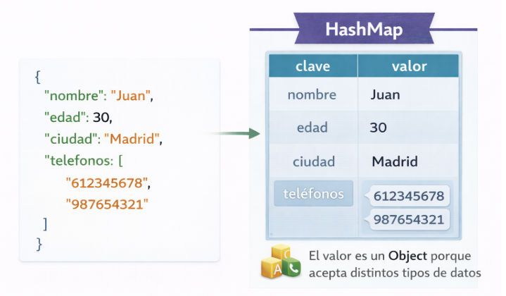
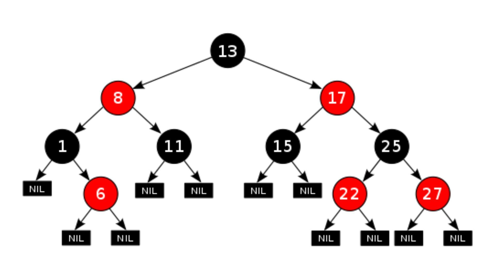
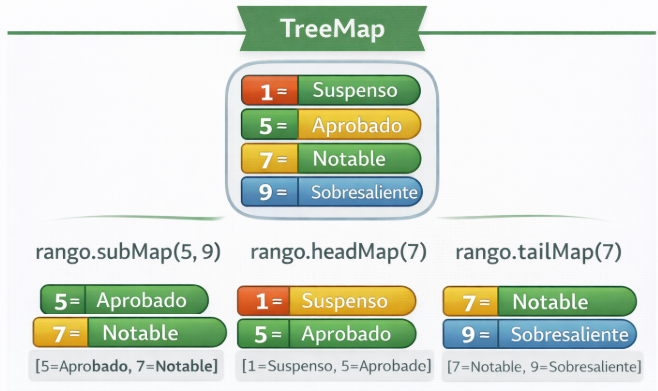

Map¶
Aunque las estructura de datos Map no forma parte dentro de la jerarquía de la interfaz Collection, se considera una interfaz de colección principal de Java Collections Framework.

Un Map es un objeto que asigna claves a valores. Un mapa no puede contener claves duplicadas: cada clave puede asignarse a un valor como máximo. Sin embargo, los valores asignados a la clave pueden tener valores duplicados. La interfaz Map incluye métodos para operaciones básicas (como put, get, remove, containsKey, containsValue, size, y empty) entre muchos otros.

La plataforma Java contiene tres implementaciones de Map: HashMap, TreeMap y LinkedHashMap.
Métodos de HasMap¶
| Método | Descripción | Ejemplo |
|---|---|---|
put(K key, V value) |
Inserta una clave y su valor en el mapa. Si la clave ya existe, sobrescribe el valor. | map.put("nombre", "Carlos"); |
get(Object key) |
Obtiene el valor asociado a la clave dada. | map.get("nombre"); // "Carlos" |
remove(Object key) |
Elimina la clave y su valor del mapa. | map.remove("nombre"); |
containsKey(Object key) |
Verifica si una clave existe en el mapa. | map.containsKey("nombre"); // true |
containsValue(Object value) |
Verifica si un valor existe en el mapa. | map.containsValue("Carlos"); // true |
size() |
Devuelve el número de elementos en el mapa. | map.size(); // 1 |
isEmpty() |
Comprueba si el mapa está vacío. | map.isEmpty(); // false |
clear() |
Elimina todos los elementos del mapa. | map.clear(); |
keySet() |
Devuelve un Set con todas las claves del mapa. |
Set<String> claves = map.keySet(); |
values() |
Devuelve una colección con todos los valores del mapa. | Collection<String> valores = map.values(); |
entrySet() |
Devuelve un Set con todas las parejas clave-valor. |
Set<Map.Entry<String, String>> entradas = map.entrySet(); |
putIfAbsent(K key, V value) |
Inserta un valor solo si la clave no existe. | map.putIfAbsent("edad", 30); |
replace(K key, V value) |
Reemplaza el valor de una clave solo si ya existe. | map.replace("nombre", "Ana"); |
getOrDefault(Object key, V defaultValue) |
Devuelve el valor de la clave o un valor por defecto si no existe. | map.getOrDefault("apellido", "Desconocido"); |
merge(K key, V value, BiFunction<? super V, ? super V, ? extends V> remappingFunction) |
Combina valores en la misma clave según una función. | map.merge("edad", 1, Integer::sum); |
compute(K key, BiFunction<? super K, ? super V, ? extends V> remappingFunction) |
Calcula un nuevo valor para una clave existente. | map.compute("edad", (k, v) -> v + 1); |
computeIfAbsent(K key, Function<? super K, ? extends V> mappingFunction) |
Calcula un valor solo si la clave no está presente. | map.computeIfAbsent("ciudad", k -> "Madrid"); |
computeIfPresent(K key, BiFunction<? super K, ? super V, ? extends V> remappingFunction) |
Modifica un valor solo si la clave ya existe. | map.computeIfPresent("edad", (k, v) -> v + 5); |
Crear un Mapa¶
Para crear un objeto Map podemos usar cualquiera de las implementaciones para esta interfaz (HashMap, TreeMap y LinkedHashMap), por ejemplo:
Map<String, String> idiomas = new HashMap<>();
Añadir claves y valores en un mapa¶
Para añadir un par de clave-valor al mapa usamos el método put:
public class MainMap {
public static void main(String[] args) {
Map<String, String> idiomas = new HashMap<>();
idiomas.put("es", "Español");
idiomas.put("en", "English EEUU");
idiomas.put("ca", "English Canadá");
idiomas.put("de", "Aleman");
idiomas.put("fr", "Francés");
idiomas.put("it", "Italian");
}
}
Las claves de los mapas son únicas, si intentamos añadir un nuevo valor para una clave que ya existe, el valor es sobreescrito.
Para saber si estamos agregando una nueva clave o solo modificando el valor, el método put nos ayuda, ya que devuelve el valor anterior asociado con la clave, o null si no hubo asignación para la clave antes.
Ejemplo:
Map<String, String> idiomas = new HashMap<>();
idiomas.put("es", "Español");
idiomas.put("en", "English EEUU");
idiomas.put("ca", "English Canadá");
idiomas.put("de", "Aleman");
idiomas.put("fr", "Francés");
System.out.println(idiomas.put("it", "Italian")); //devuelve null
System.out.println(idiomas.put("it", "Italiano")); //devuelve el valor previo "Italian", lo que significa que se ha sobreescrito
Obtener el valor para una clave¶
Para obtener el valor asociado a una clave usamos el método get:
String valor = idiomas.get("it");
Comprobar si una clave o valor existe¶
if (idiomas.containsKey("es")) {
System.out.println("La clave es ya existe");
}
if (idiomas.containsValue("Español")) {
System.out.println("El idioma español ya existe");
}
Imprimir todos los valores del Map¶
Lo haremos de la siguiente forma:
for(String key: idiomas.keySet()) {
System.out.println(key + " " + idiomas.get(key));
}
Al imprimir vemos que las claves no aparecen en ningún orden, ni en el que las hemos introducido ni en orden alfabético. Los elementos del HashMap no están ordenados.
Imprimir cada una de las entradas del mapa¶
Si queremos recorrer las entradas del mapa usaremos:
for (Map.Entry<String, String> entradaMapa: idiomas.entrySet()) {
System.out.println(entradaMapa.getKey() + " " + entradaMapa.getValue());
}
Eliminar una entrada clave-valor de un Map¶
Tenemos dos formas de eliminar:
- Eliminar desde una clave existente, o
- Eliminar un par clave-valor existente.
//Forma 1
boolean eliminado = idiomas.remove("fr");
//Forma 2
if (idiomas.remove("de", "Ingles")) {
System.out.println("de ha sido eliminado");
} else {
System.out.println("No existe un par clave-valor con de-Ingles");
}
Reemplazar el valor de una clave¶
idiomas.replace("es", "Spain");
idiomas.replace("en", "English", "English EEUU");//Reemplazo el antiguo valor por el nuevo, pero antes me aseguro que el antiguo valor sea ese dato antes de cambiarlo
HashMap¶
HashMap es una estructura de datos que implementa la Map<Key,Value> interfaz y se basa en el principio de hash.
Una función hash es una función que convierte datos de entrada de cualquier tamaño (generalmente grande) en datos de tamaño fijo, generalmente compactos. El resultado de esta función de trabajo se llama código hash.
Cada objeto Java tiene un código hash. Suele ser un número y se calcula utilizando el método hashCode de la clase Object.
JSON y HashMap¶
En Java, la clase HashMap es una estructura de datos que permite almacenar pares clave-valor. Cada clave es única y se utiliza para acceder a su valor correspondiente. Los HashMap son muy útiles para almacenar datos que tienen una estructura similar a la de un objeto JSON
Supongamos que tenemos el siguiente objeto JSON
{
"nombre": "Juan",
"edad": 30,
"ciudad": "Madrid",
"telefonos": [
"612345678",
"987654321"
]
}
HashMap que podría haberse leído de un servicio web o un fichero:

//El valor debe ser Object porque podemos contener diversos tipos de datos
HashMap<String, Object> persona = new HashMap<>();
persona.put("nombre", "Juan");
persona.put("edad", 30);
persona.put("ciudad", "Madrid");
ArrayList<String> telefonos = new ArrayList<>();
telefonos.add("612345678");
telefonos.add("987654321");
persona.put("telefonos", telefonos);
String nombre = (String) persona.get("nombre");
int edad = (int) persona.get("edad");
String ciudad = (String) persona.get("ciudad");
ArrayList<String> telefonos = (ArrayList<String>) persona.get("telefonos");
System.out.println("Nombre: " + nombre);
System.out.println("Edad: " + edad);
System.out.println("Ciudad: " + ciudad);
System.out.println("Teléfonos: " + telefonos);
TreeMap¶
TreeMap es una clase de Java que pertenece al paquete java.util y implementa la interfaz Map. Sirve para guardar pares clave–valor, pero manteniendo las claves ordenadas automáticamente.
TreeMap = Map + Orden automático por clave
Características principales¶
-
Las claves se ordenan de forma natural (String alfabéticamente, Integer de menor a mayor).
-
También se puede usar un Comparator personalizado.
TreeMap<Integer, String> mapa = new TreeMap<>();

Cada nodo contiene:
- una clave
- un valor
- referencia al hijo izquierdo
- referencia al hijo derecho
- referencia al padre
- un color (rojo o negro). Garantiza que el árbol esté siempre equilibrado, evitando que se vuelva muy alto
Las claves se colocan siguiendo esta regla:
-
Claves menores → subárbol izquierdo
-
Claves mayores → subárbol derecho
Ejemplo:
TreeMap<Integer, String> mapa = new TreeMap<>();
mapa.put(2, "Luis");
mapa.put(1, "Ana");
mapa.put(3, "Carlos");
2=Luis
/ \
1=Ana 3=Carlos
| Método | Qué hace |
|---|---|
subMap(a, b) |
Claves entre a y b |
headMap(k) |
Claves menores que k |
tailMap(k) |
Claves mayores o iguales a k |
Ideal para fechas, notas, IDs, tramos, etc.
TreeMap es más lento que HashMap pero mantiene el orden siempre correcto y la búsquedas son muy eficientes(get, put, remove).
El recorrido del TreeMap sale siempre ordenado
for (Map.Entry<Integer, String> e : mapa.entrySet()) {
System.out.println(e.getKey() + " " + e.getValue());
}
Cuando usar
| Caso | Mejor opción |
|---|---|
| Orden automático | TreeMap |
| Máxima velocidad | HashMap |
| Mantener orden de inserción | LinkedHashMap |
Ejemplos
Uso básico de TreeMap
public class EjemploTreeMap {
public static void main(String[] args) {
TreeMap<Integer, String> alumnos = new TreeMap<>();
alumnos.put(3, "Carlos");
alumnos.put(1, "Ana");
alumnos.put(2, "Luis");
System.out.println(alumnos);
//{1=Ana, 2=Luis, 3=Carlos}
}
}
/*
1 -> Ana
2 -> Luis
3 -> Carlos
*/
for (Integer clave : alumnos.keySet()) {
System.out.println(clave + " -> " + alumnos.get(clave));
}
System.out.println("Primera clave: " + alumnos.firstKey());
System.out.println("Última clave: " + alumnos.lastKey());

TreeMap<Integer, String> rango = new TreeMap<>();
rango.put(1, "Suspenso");
rango.put(5, "Aprobado");
rango.put(7, "Notable");
rango.put(9, "Sobresaliente");
// Claves entre 5 y 9 (sin incluir 9)
System.out.println(rango.subMap(5, 9));
// Claves menores que 7
System.out.println(rango.headMap(7));
// Claves mayores o iguales que 7
System.out.println(rango.tailMap(7));